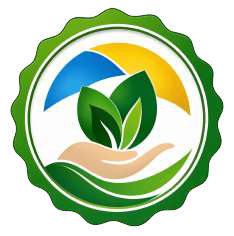
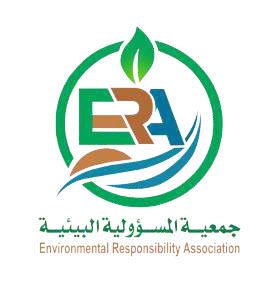

مبادرة تطلقها جمعية المسؤولية البيئية الأهلية بالتزامن مع اليوم العربي للبيئة 2026، تحت شعار «استدامة المراعي لتعزيز القدرة على الصمود»، وتمتد منظومةً متكاملةً حتى عام 2030.
مستهدفٌ موحّد لكل مسار من مسارات المبادرة: أشجار وساعات تطوع ومتطوعون ومتدربون ومنتجات وأعمال فنية، ليُصنع الأثر برقمٍ يلتقي مع رؤية 2030.
انطلاقًا من مستهدفات رؤية المملكة العربية السعودية 2030، وما تشهده المملكة من اهتمامٍ متزايد بقضايا البيئة والاستدامة وجودة الحياة، تأتي مبادرة «الأثر الأخضر المستدام» بوصفها مبادرةً مجتمعيةً توعويةً تنمويةً تسعى إلى تعزيز المسؤولية البيئية، وترسيخ ثقافة الاستدامة، وتمكين الشراكات ذات الأثر المستدام.
وتمثّل المبادرة منصةً تجمع الجهات الحكومية والقطاع الخاص والقطاع غير الربحي والخبراء البيئيين، بهدف تبادل الخبرات وبناء شراكاتٍ تُسهم في دعم التنمية البيئية المستدامة وتحقيق المستهدفات الوطنية.
«فالرحلة مستمرة… والأثر يتراكم»
تتحول المبادرة من فعاليةٍ موسمية إلى منظومةٍ متكاملة تمتد حتى عام 2030، تُحوّل المناسبات البيئية إلى تجارب تعليمية ومجتمعية مستدامة، تصنع جيلًا واعيًا قادرًا على صياغة مستقبلٍ بيئي مزدهر.
مشاريع مستدامة ذات أثرٍ قابل للقياس.
برامج مجتمعية وتعليمية متكاملة.
شراكات فاعلة بين القطاعات الثلاثة.
منصة سنوية لتبادل الخبرات وقياس الأثر.
أن تكون مبادرة «الأثر الأخضر المستدام» النموذجَ الرائد في تحويل المناسبات البيئية إلى تجارب تعليمية مجتمعية مستدامة، مدعومةً بمنظومة إعلامية متخصصة، وفريق تطوعي احترافي، ومنصة ذكية لإدارة الأثر التنموي.
تفعيل اليوم العربي للبيئة 2026 من خلال مبادرة مجتمعية متكاملة تربط شعار استدامة المراعي بالممارسة الفعلية، وتحوّل المشاركة إلى أثرٍ مستمر وقابل للقياس، عبر شراكات استراتيجية، ومركز إعلامي بيئي، ومنصة ذكية، وفريق تطوعي محترف، وملتقى سنوي.
تفعيل 15 مدرسة، وتحويل 5 أطنان من النفايات عن المرادم سنويًا.
مشروع تشجير مجتمعي بزراعة 2,030 شجرة.
زراعة أشجار متنوعة، يرافقها معرض فني تعريفي.
المرحلة الأولى ونواة التوسع في زراعة الشتلات.
سلسلة متكاملة: تعليم، وتدوير، وعرض، وتسويق.
تنظيم رحلات بيئية للسياح من داخل المملكة وخارجها.
عضوية احترافية للمتطوعين في العمل البيئي.
مركز إعلامي مؤسسي لإنتاج المحتوى البيئي ونشره.
برامج تأهيل تفتح أمام المشاركين فرصًا خضراء.
معرض فني بيئي يضم لوحات وقطعًا وأعمالًا فنية.
جداريات على أسوار المدارس في المناسبات الوطنية والدولية.
مساحة للتعبير عن الأثر بالكتابة والرسم والتعبير الحر.
منظومة رقمية ذكية لإدارة تحقيق الأثر التنموي المستدام.
قناة المشاركة الرقمية للجمهور في أنشطة المبادرة.
شريك استراتيجي
استثمر في الأثر
معًا نصنع الأثر
أنت صانع الأثر
الأثر الذي يستحق النشر
بيئتك مسؤوليتك
وترتبط المبادرة بأهداف الأمم المتحدة للتنمية المستدامة، وباتفاق باريس للمناخ، واتفاقيات ريو، وإطار كونمينغ-مونتريال العالمي للتنوع البيولوجي. وأبرز الأهداف المرتبطة:
| الوقت | الفقرة |
|---|---|
| الافتتاح | |
| 8:45 ص | استقبال الضيوف والتسجيل |
| 9:00 ص | السلام الملكي |
| 9:05 ص | الكلمة الترحيبية |
| 9:10 ص | كلمة الراعي الرسمي |
| 9:15 ص | عرض مرئي: «الأثر الأخضر المستدام» |
| تدشين المشاريع | |
| 9:20 ص | فريق المسؤولية البيئية التطوعي |
| 9:30 ص | مشروع الطريق الأخضر |
| 9:40 ص | مشروع مدرستي الخضراء |
| 9:50 ص | مشروع واحة الاستدامة |
| 10:00 ص | مشروع غصن الاستدامة |
| 10:10 ص | المسار السياحي البيئي الأخضر |
| 10:20 ص | مشروع الغصن الأخضر |
| 10:30 ص | بناء القدرات والتأهيل الأخضر |
| 10:40 ص | الفن البيئي الأخضر المستدام |
| 10:50 ص | جدارية الأثر الأخضر المستدام |
| 11:00 ص | مدونة مشاعر الأثر الأخضر المستدام |
| 11:10 ص | مركز الإعلام البيئي |
| 11:20 ص | منصة المسؤولية الذكية |
| الختام | |
| 11:30 ص | تكريم شركاء النجاح |
| 11:50 ص | الصورة الجماعية |
| 12:00 م | جولة في المعرض والأنشطة المصاحبة |
| 12:30 م | الختام والتوديع |
تمتد المبادرة على مراحل متتابعة من 2026 إلى 2030، بتوسعٍ مستمر في المستهدفات والشراكات، وتغطي محاور البيئة والتعليم والسياحة والفنون والاقتصاد الدائري والإعلام الرقمي، لتُحدث تغييرًا ملموسًا في السلوك البيئي والمجتمعي، وتحقق أثرًا تنمويًا مستدامًا قابلًا للقياس عبر منظومة ذكية لإدارة الأثر ودعم القرار.